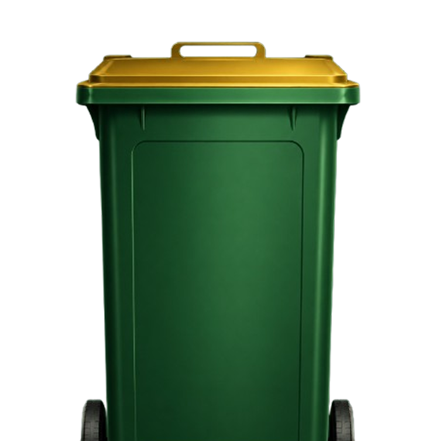
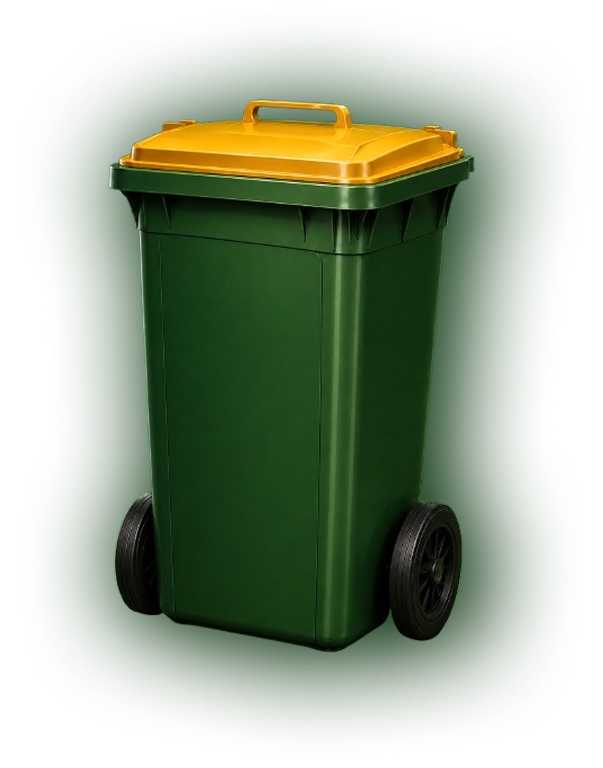

NATURA.
Bersama Kita Wujudkan Lingkungan Bersih
dan Masa Depan yang Lebih Baik
Ayo Laporkan Sekarang

About
NATURA adalah platform pelaporan sampah berbasis poin yang menghubungkan masyarakat, petugas kebersihan, dan UMKM dalam satu ekosistem digital. Cukup foto, tandai lokasi, dan laporkan — masyarakat dapat poin, petugas kebersihan dapat kerja tambahan, dan UMKM dapat pelanggan baru lewat program voucher. Satu aksi kecil, dampak besar untuk lingkungan yang lebih bersih.
Empat Langkah Praktis
Ayo kita wujudkan lingkungan yang bersih itu demi masa depan bersama.
Masyarakat mengunggah foto lokasi yang terdapat sampah beserta titik koordinat untuk dilaporkan ke sistem.
Admin memverifikasi laporan yang masuk, memberikan poin kepada pelapor, lalu meneruskan laporan kepada petugas kebersihan.
Petugas kebersihan dapat laporan, membersihkan lokasi, kemudian mengunggah bukti penyelesaian tugas.
Setelah lokasi dinyatakan bersih, pelapor memperoleh poin tambahan yang dapat ditukarkan dengan berbagai reward dari UMKM mitra.